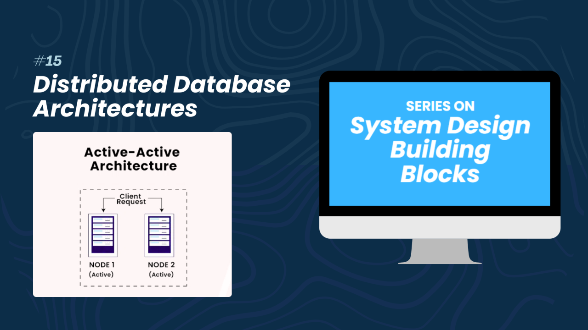

Distributed Database Architectures | Active-Active Architecture Application
Ashmita Pandey · · Distributed Systems · Databases

Hi everyone 👋
As applications scale globally, database architectures become central to performance, reliability, and user experience. A well-designed database architecture can be the difference between seamless access and frustrating delays. This article dives deep into one such architecture: Distributed Database Architectures, with a special focus on their role in active-active deployments. We’ll explore what makes a database suitable for modern, global applications, evaluate different architecture models, and understand their trade-offs using practical, real-world examples and beginner-friendly analogies.
What is a Distributed Database Architecture?
A distributed database architecture is a system where the data is stored across multiple servers or physical locations, often spread across various regions or countries. The main goal of such systems is to ensure that users, no matter where they are, can access and interact with data quickly, reliably, and consistently.
Beginner Analogy:
Imagine you run a chain of bookstores. Rather than stocking every single book only in the main warehouse, you store popular titles in each city store so that local customers can get them quickly. Similarly, distributed databases replicate or partition data across locations so users aren’t always waiting for distant servers.
Real-World Example:
Think of a global hotel booking platform. During holiday seasons, users from Los Angeles, London, and Tokyo might all be making bookings at the same time. If all their requests go to a central database in Frankfurt, latency and system overloads can lead to timeouts. Instead, a distributed system places data closer to users and synchronizes changes across locations.
Why Active-Active Architectures Matter
In modern systems, it's common to deploy applications in an active-active setup, meaning multiple data centers (or cloud regions) are live and accepting user traffic simultaneously. This provides:
- Faster performance by processing data locally
- High availability, even if one data center fails
- Load distribution across global infrastructure
However, there's a common misconception: that an active-active setup requires a multi-master database. This is not true, and as we’ll explore, such setups can introduce consistency issues that may harm user experience.
Four Key Requirements for Active-Active Databases
A database supporting an active-active setup must deliver:
- Performance – Reads and writes should occur locally for low latency.
- Durability – Data should persist even after hardware or network failures.
- Consistency – Users should see up-to-date, accurate data everywhere.
- Availability – The system should stay functional during failures.
Because it’s difficult to excel in all four simultaneously, different architectures prioritize different trade-offs.
Understanding Common Database Architectures
1. Distributed Transactions with Two-Phase Commit
In this architecture, multiple nodes must agree before committing a write. If any node fails, the transaction is rolled back to maintain consistency.
Analogy:
Think of friends trying to order a group meal. Unless everyone confirms their order, no one gets food. It's safe but slow.
Pros:
- Strong consistency
Cons:
- High latency, especially across global distances
Use Case:
Banking systems that prioritize data accuracy over speed.
2. Multi-Master Database
All nodes can accept writes, which are then synchronized. Sounds ideal—until two writes conflict.
Analogy:
Imagine two editors making changes to the same paragraph in different copies of a book. Later, someone has to decide which version stays.
Pros:
- Local write support
Cons:
- Data conflicts and potential loss
- Hard to predict final state of data
Real Example:
A user in New York adds a phone to their cart while a system in London removes it due to stock changes. The final version may ignore one update entirely.
3. Partitioned (Sharded) Database
Here, the data is divided into partitions (called shards), and each shard has a primary node responsible for handling reads and writes for that data.
Analogy:
It’s like assigning different departments in a company to handle specific tasks. One handles HR, one handles sales. No overlap, so no confusion.
Pros:
- High performance and consistency
- Easy failover with replicas
Cons:
- Needs smart routing of user requests to correct shard
Example:
In a ride-sharing app, users from Asia are routed to the Singapore shard while US users go to the Oregon shard. Both operate independently but remain consistent through replication.
Deep Dive: Shopping App Example
Let’s say we have a shopping app with users from Europe and Asia. We set up:
- EU shard with a primary node in Frankfurt
- APAC shard with a primary in Singapore
Each data center also hosts replicas of the other shard. So if Frankfurt goes down, Paris takes over in seconds. When a European user adds a product to their cart, the data is processed locally. The same applies to users in Asia. There’s no data clash, no inconsistency.
MongoDB in Distributed Architectures
MongoDB uses a sharded cluster with replica sets. Each shard:
- Has a primary node for writes
- Has secondaries across regions for redundancy
You can configure:
- Write concern to determine how many nodes must confirm a write
- Read concern to ensure reads reflect durable data
Causal Consistency
MongoDB supports causal consistency. This means your app will always read its most recent writes, even if the reads and writes happen in different regions or servers.
Analogy:
It’s like editing a Google Doc from your phone and laptop. Even if you're switching devices, every update is visible in real time.
Conclusion
Choosing the right database architecture is vital for modern apps. While multi-master databases offer local writes, they often sacrifice consistency and predictability. Distributed transactions offer safety but lack performance. Sharded (partitioned) databases offer the best balance: performance, consistency, availability, and durability.
For developers and architects building global apps, understanding these trade-offs ensures better decisions and smoother experiences for users. MongoDB is a great example of how sharded architecture can power resilient, high-performing, active-active applications.
Thanks for reading!